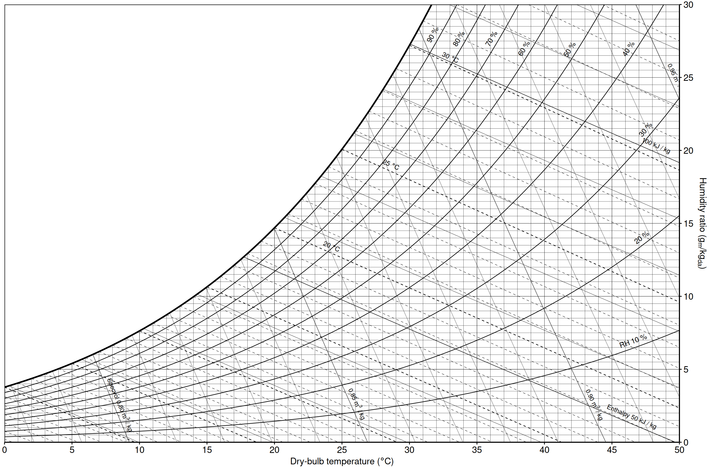
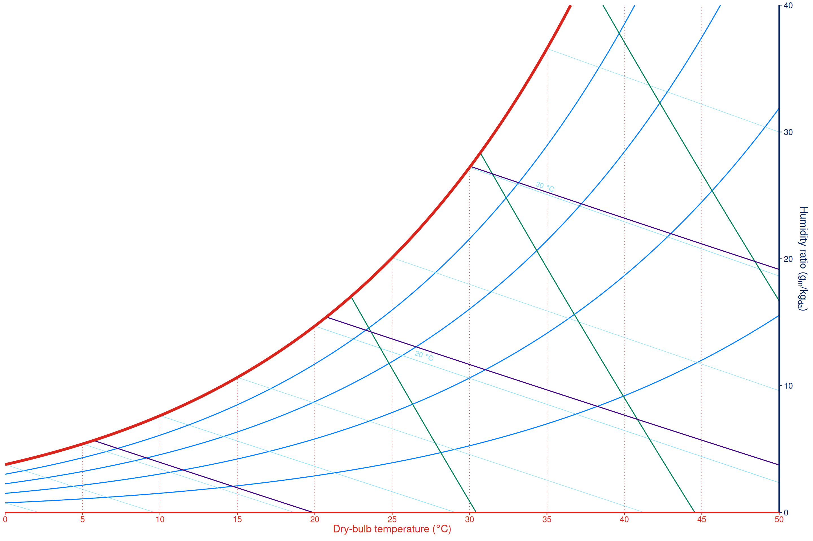
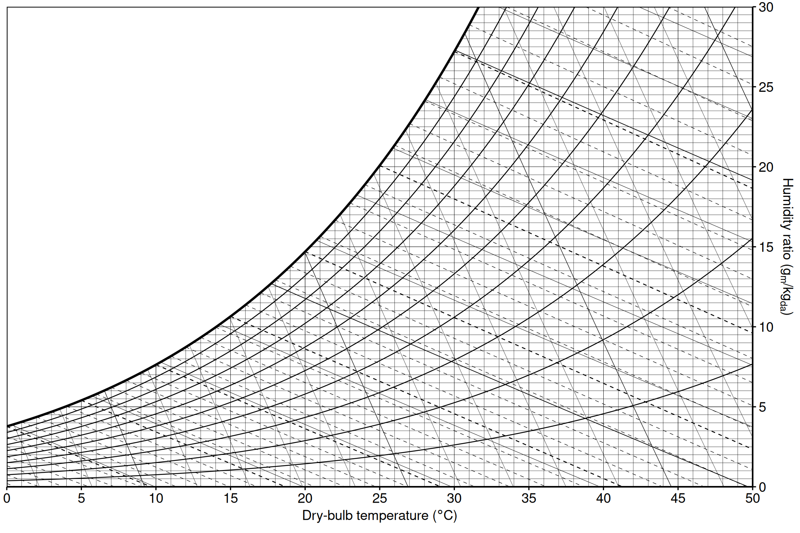
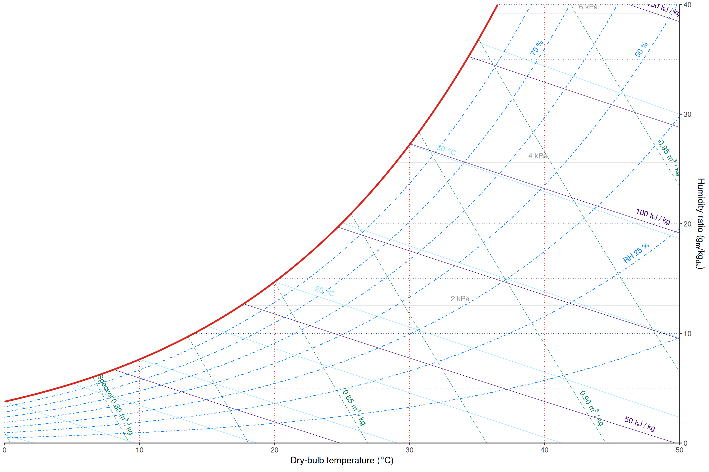
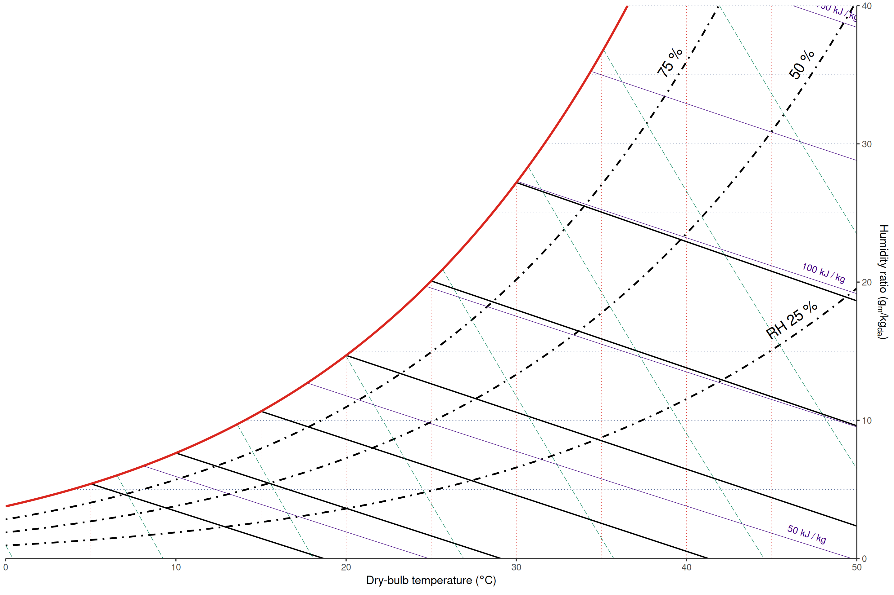
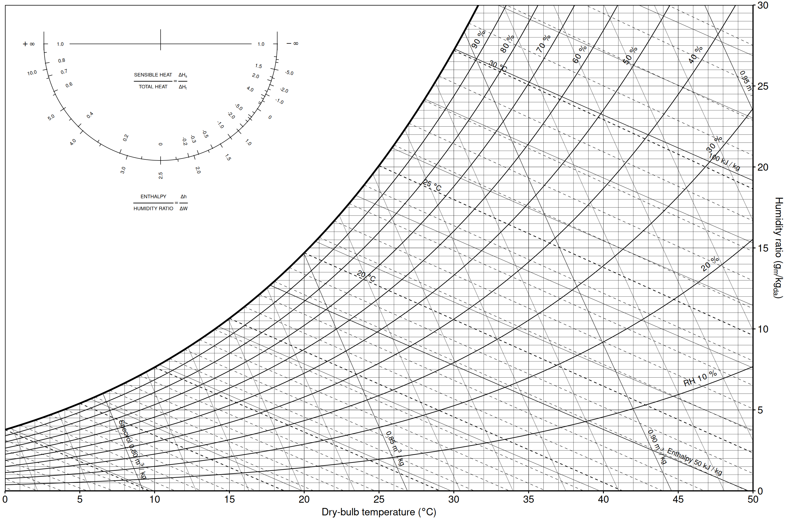
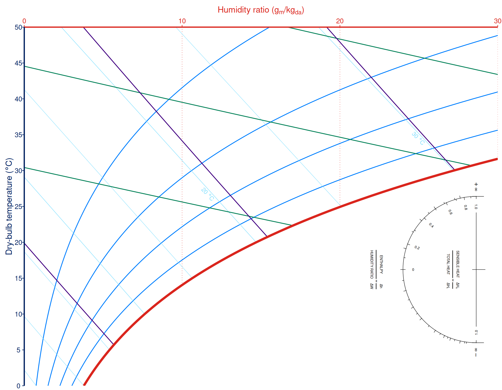
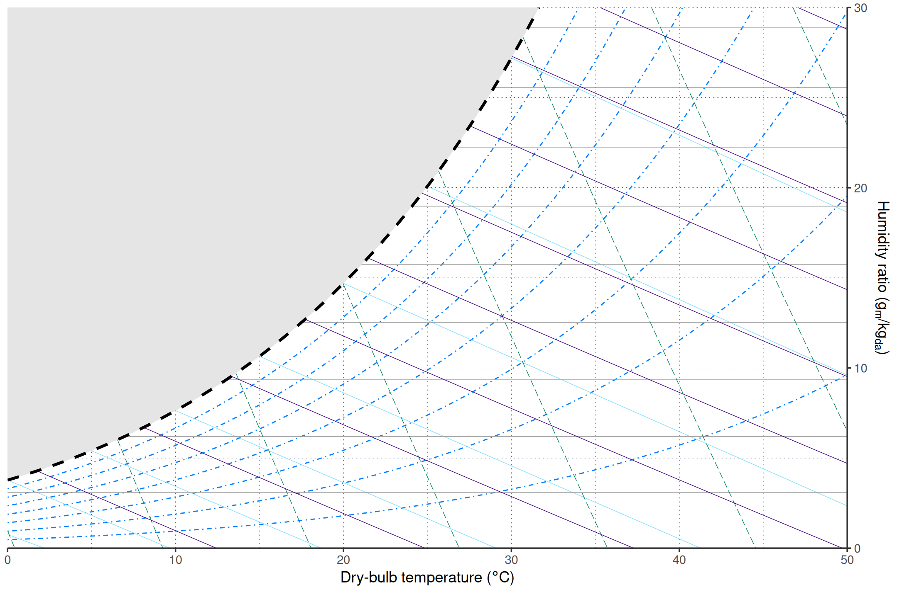

ggpsychro draws the dry-bulb grid, humidity-ratio grid, saturation
curve, and psychrometric reference grids through
coord_psychro(). The default reference grids are drawn
without labels. Add geom_grid_*() helpers when a grid
should be explicit and labelled.
Presets
psychro_preset() applies a named collection of scales,
labelled reference grids, and a matching theme. The built-in presets are
"ashrae" and "minimal".
ggpsychro(tdb_lim = c(0, 50), hum_lim = c(0, 30)) +
psychro_preset("ashrae")
ggpsychro(tdb_lim = c(0, 50), hum_lim = c(0, 40)) +
psychro_preset("minimal")
Use labels = FALSE when you want the preset’s grid
visibility and theme but no grid labels.
ggpsychro(tdb_lim = c(0, 50), hum_lim = c(0, 30)) +
psychro_preset("ashrae", labels = FALSE)
Reference grid helpers
The reference grid helpers are:
| Helper | Property |
|---|---|
geom_grid_relhum() |
Relative humidity |
geom_grid_wetbulb() |
Wet-bulb temperature |
geom_grid_vappres() |
Vapor pressure |
geom_grid_specvol() |
Specific volume |
geom_grid_enthalpy() |
Enthalpy |
ggpsychro(tdb_lim = c(0, 50), hum_lim = c(0, 40)) +
geom_grid_relhum() +
geom_grid_wetbulb() +
geom_grid_vappres() +
geom_grid_specvol() +
geom_grid_enthalpy()
These helpers do not add data layers. They update the psychrometric coordinate metadata so the panel background can draw or hide the selected grid.
Breaks, labels, and style
Each reference grid has a matching scale_*_continuous()
function. Use these scales to customize breaks, minor breaks, limits,
and labels.
ggpsychro(tdb_lim = c(0, 50), hum_lim = c(0, 40)) +
geom_grid_relhum(linewidth = 0.8, color = "black", label.size = 5) +
scale_relhum_continuous(breaks = seq(25, 75, by = 25), minor_breaks = NULL) +
geom_grid_wetbulb(color = "black", linewidth = 0.6, label = FALSE) +
scale_wetbulb_continuous(breaks = seq(5, 30, by = 5), minor_breaks = NULL) +
geom_grid_vappres(show = FALSE) +
scale_specvol_continuous(labels = NULL) +
geom_grid_enthalpy()
Line style arguments go directly to
ggplot2::element_line(). Label style arguments use a
label. prefix, such as label.size,
label.color, and label.vjust.
Psychrometric protractor
geom_psychro_protractor() adds the ASHRAE-style sensible
heat ratio and heat-moisture-ratio protractor in the chart mask area.
The parent chart decides the orientation: regular charts place it in the
upper-left mask area, while Mollier charts rotate the same protractor
into the lower-right mask area.
ggpsychro(tdb_lim = c(0, 50), hum_lim = c(0, 30)) +
psychro_preset("ashrae") +
geom_psychro_protractor()
Use scale to resize the whole protractor and a length-2
margin to adjust the horizontal and vertical mask-area
offsets. Tick breaks and labels are controlled by
guide_psychro_protractor().
ggpsychro(tdb_lim = c(0, 50), hum_lim = c(0, 30), mollier = TRUE) +
psychro_preset("minimal") +
geom_psychro_protractor(
scale = 0.85,
margin = c(0.06, 0.12),
guide = guide_psychro_protractor(
shr_breaks = c(0, 0.2, 0.4, 0.6, 0.8, 1),
shr_minor_breaks = seq(0.1, 0.9, by = 0.1),
ratio_labels = NULL
)
)
Theme elements
ggpsychro adds psychrometric theme elements for panel masks and
reference grids. Use these with regular theme() calls.
ggpsychro(tdb_lim = c(0, 50), hum_lim = c(0, 30)) +
geom_grid_relhum(label = FALSE) +
theme(
psychro.panel.grid.saturation = element_line(
color = "black", linetype = 2
),
psychro.panel.mask = element_polygon(fill = "gray90", color = NA)
)